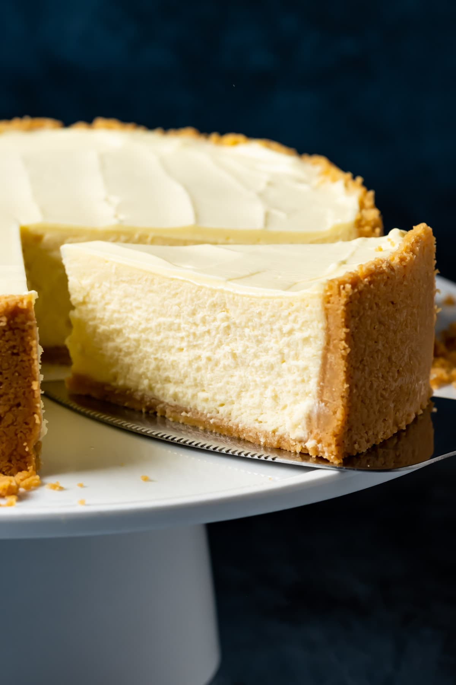

Cheesecake

With this foolproof recipe, a creamy, beautiful, crack-free homemade cheesecake is totally doable even for beginners!
Ingredients
- 1 1/2 cups (150g) graham cracker crumbs
- 1/4 cup (28g) confectioners' sugar
- 6 tablespoons (85g) butter, melted
- 1/8 teaspoon table salt
- Two 8-ounce packages (452g) cream cheese
- 2/3 cup (133g) granulated sugar
- 2 large eggs
- 1 teaspoon vanilla extract
Instructions
- Select a pie pan whose inside top dimension is at least 9 inches. Preheat the oven to 350°F.
- Make the crust by stirring together all of the crust ingredients.
- Press the crumbs into the bottom and sides of the pie pan.
- Make the cheesecake filling by mixing the cream cheese and sugar until smooth, then mix in the eggs and vanilla.
- Pour the filling into the crust and spread it into an even layer.
- Bake for about 30 minutes.
- Remove the cheesecake from the oven and let it cool.
- Refrigerate until ready to serve.